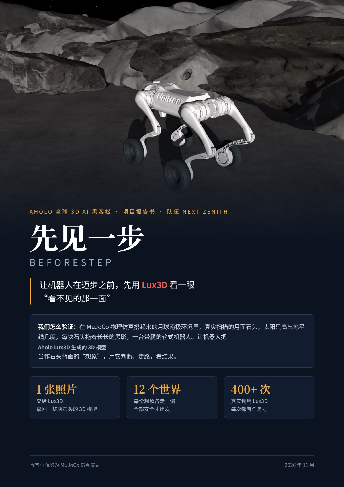
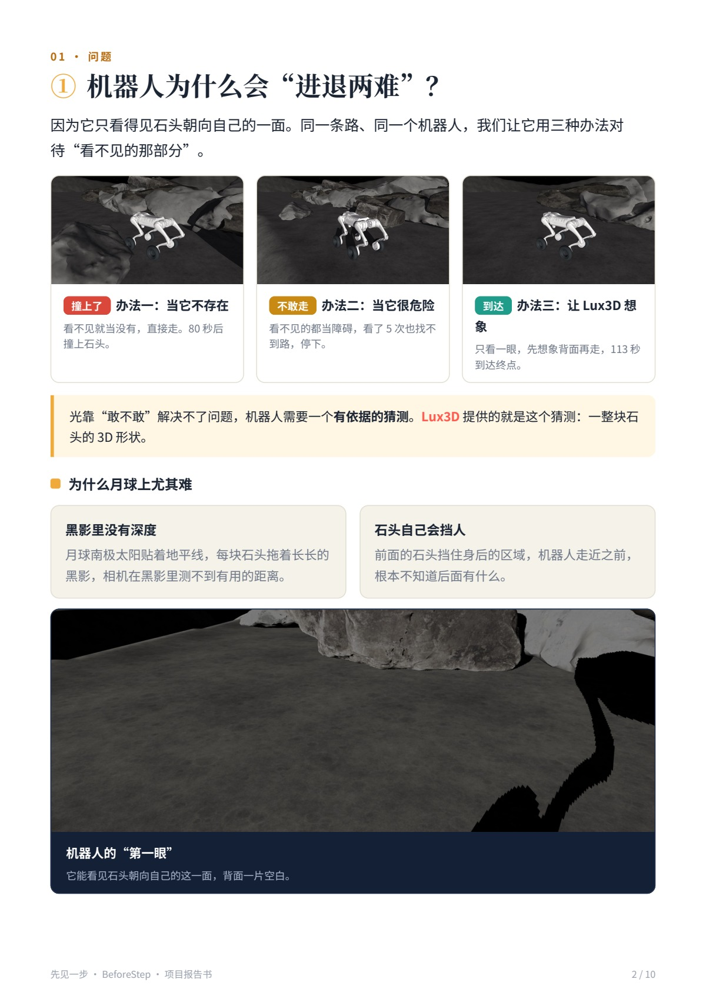
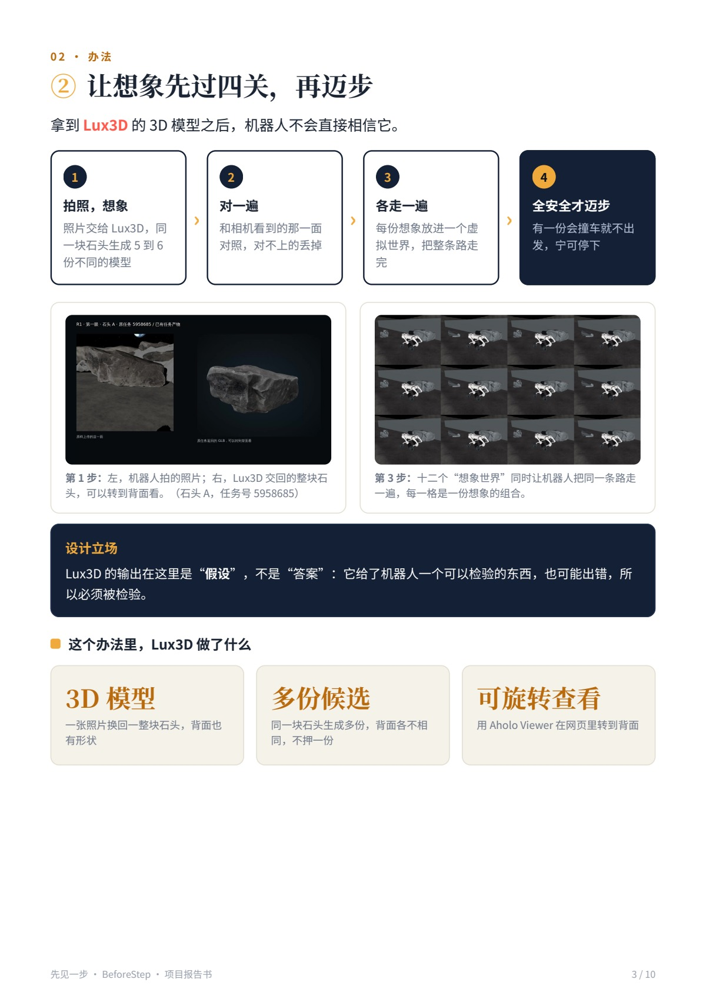
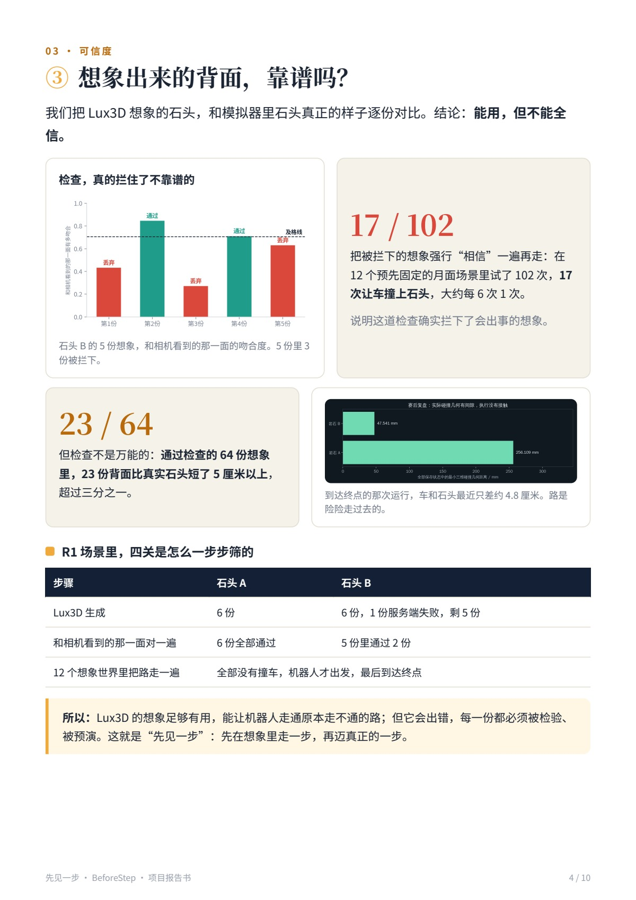
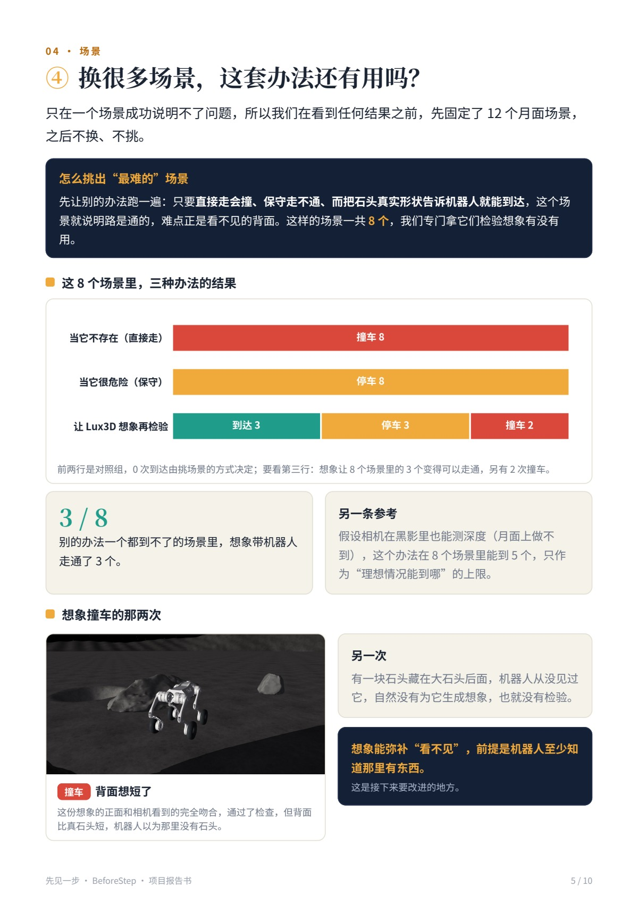
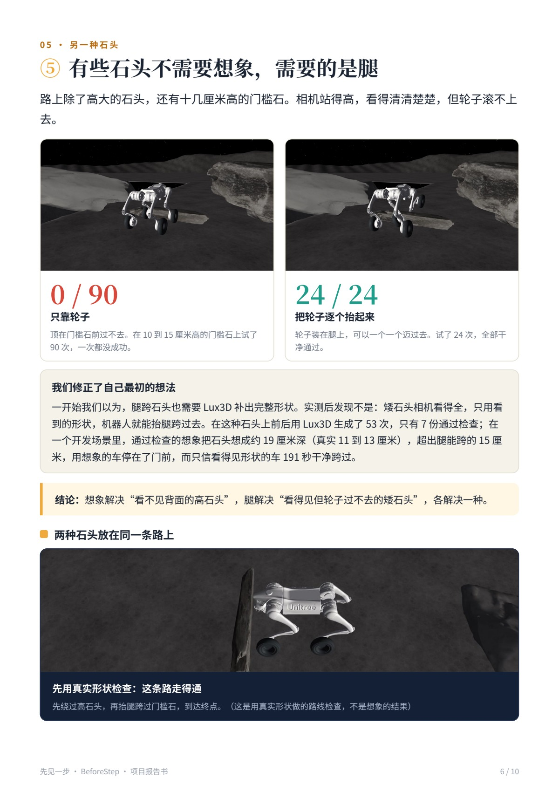
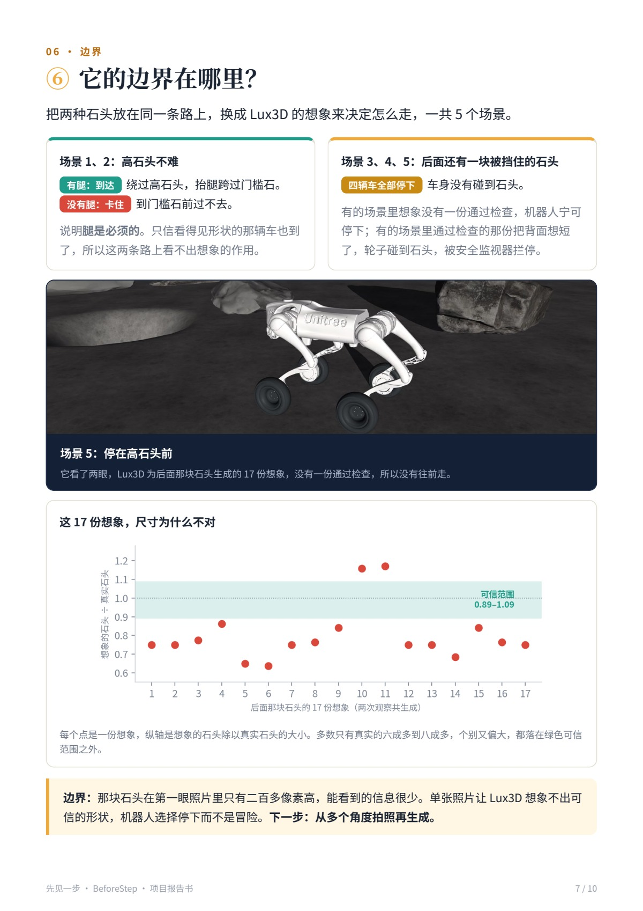
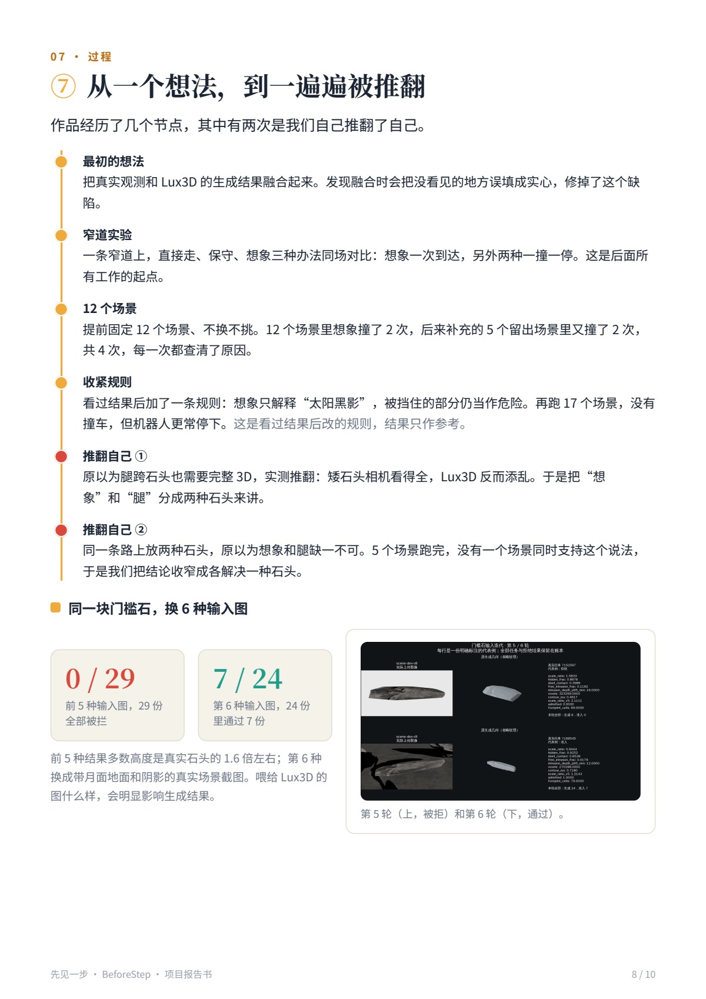
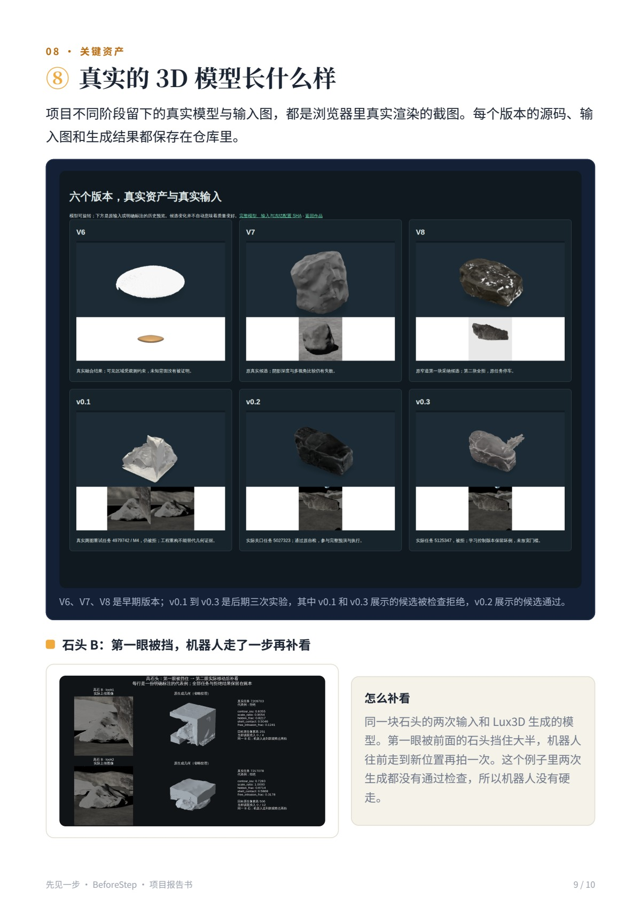
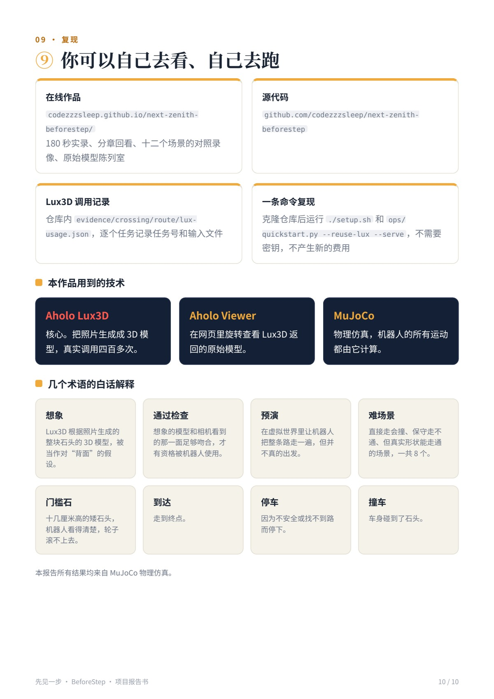

正式项目报告 / v3
先见一步，
从问题到证据。
十页报告，说明照片怎样变成完整三维候选，模型怎样进入预演，以及机器人实际走到了哪里。

先见一步 · 项目报告书 v31 / 10









读完之后，继续复查
代码、原数据，
和每一步的来源。
报告里的方法与结果，可以对应到原始模型、运行记录和可复现源码。
源代码、原始数据与复现
作品实际调用 Lux3D 四百多次，生成的三维模型参与观测核对、路线预演和机器人行动判断。下方可查看原始模型、制作代码与数据。
最新事实与原始来源 · 成片、39 条素材与数据包 · 数据恢复与制作代码
报告第 10 页的冻结 R1 复现入口完整写法如下。使用 Python 3.12，并先取得 Git LFS 数据；这一路径复用已有 Lux3D 结果，不需要密钥，不创建新的生成任务。
git clone https://github.com/codezzzsleep/next-zenith-beforestep.git
cd next-zenith-beforestep
git lfs pull
./setup.sh
MUJOCO_GL=egl .venv/bin/python ops/quickstart.py --reuse-lux --serve此命令运行冻结 R1 场景。其他场景的配置、原始输入与执行记录见仓库文档。